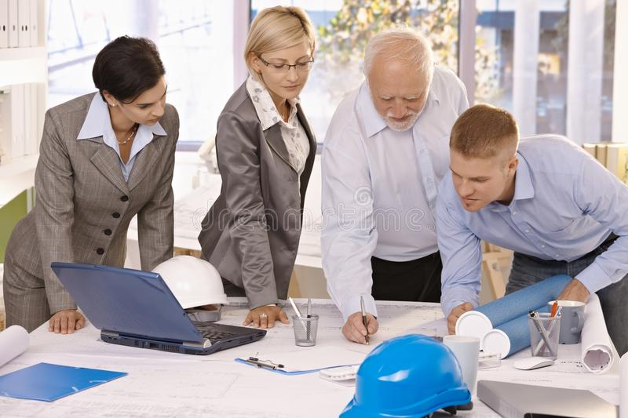
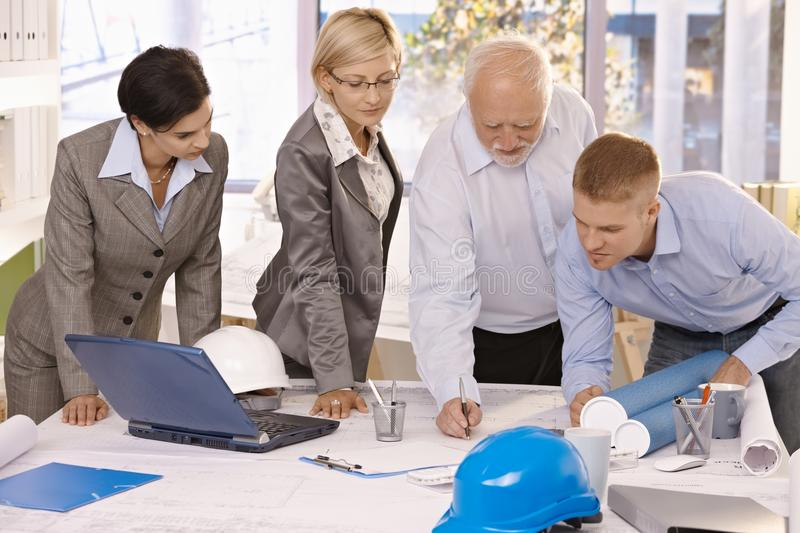

Features
Architectural feature." Any construction attending to but not an integral part of a sign, such as, by way of example not limitation, landscape, building, or structural forms that enhance the site in general; it also includes graphic stripes and other architectural painting techniques applied to a structure that serves a functional purpose, or when the stripes or other painting techniques are applied to a sign, provided such treatment does not include lettering, logos, or pictures.
love & enjoy
Scale refers to a building's size in relation to its surroundings and other objects, including the human body. If you are in a room right now, think about how high the ceilings are related to your size. What about the doorway you went through to enter the room? When looking at a building from the outside, scale takes into consideration how large other structures are in comparison. You also want to think about any landscaping and how that relates to the building as a whole. Proportion is a little bit different than scale and describes the relationship between the different parts of an object. When thinking about a building's proportion, consider how the parts relate to the whole.
Scale refers to a building's size in relation to its surroundings and other objects, including the human body. If you are in a room right now, think about how high the ceilings are related to your size. What about the doorway you went through to enter the room? When looking at a building from the outside, scale takes into consideration how large other structures are in comparison. You also want to think about any landscaping and how that relates to the building as a whole. Proportion is a little bit different than scale and describes the relationship between the different parts of an object. When thinking about a building's proportion, consider how the parts relate to the whole.
Scale refers to a building's size in relation to its surroundings and other objects, including the human body. If you are in a room right now, think about how high the ceilings are related to your size. What about the doorway you went through to enter the room? When looking at a building from the outside, scale takes into consideration how large other structures are in comparison. You also want to think about any landscaping and how that relates to the building as a whole. Proportion is a little bit different than scale and describes the relationship between the different parts of an object. When thinking about a building's proportion, consider how the parts relate to the whole.
Scale refers to a building's size in relation to its surroundings and other objects, including the human body. If you are in a room right now, think about how high the ceilings are related to your size. What about the doorway you went through to enter the room? When looking at a building from the outside, scale takes into consideration how large other structures are in comparison. You also want to think about any landscaping and how that relates to the building as a whole. Proportion is a little bit different than scale and describes the relationship between the different parts of an object. When thinking about a building's proportion, consider how the parts relate to the whole.
Scale refers to a building's size in relation to its surroundings and other objects, including the human body. If you are in a room right now, think about how high the ceilings are related to your size. What about the doorway you went through to enter the room? When looking at a building from the outside, scale takes into consideration how large other structures are in comparison. You also want to think about any landscaping and how that relates to the building as a whole. Proportion is a little bit different than scale and describes the relationship between the different parts of an object. When thinking about a building's proportion, consider how the parts relate to the whole.

Architecture is an interesting field. Playing with different shapes
and forms and building mind-blowing
infrastructure is what architects do. The job is interesting but it
involves lots of hard work.
The buildings have to look beautiful but at the same time have to be
sturdy and reliable.
54
Awards Winnings
1458
Project Finished
590
Clients Worked
22578
Email Send